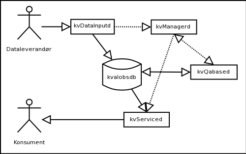
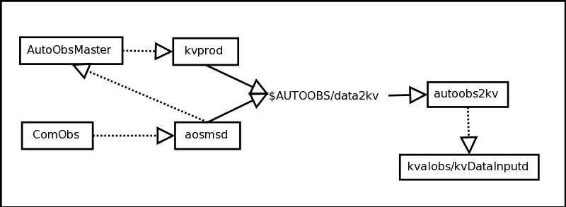
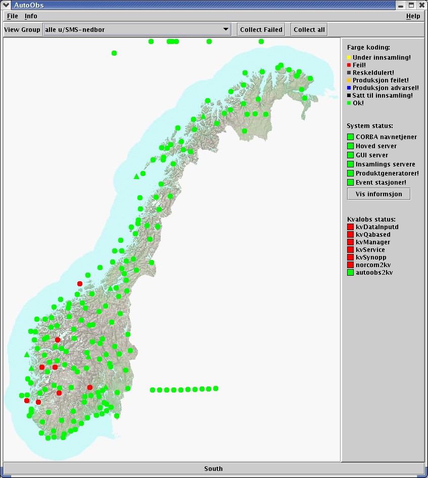

| 1 | Oversikt |
| 1.1 | Kvalobsmodulene |
| 1.1.1 | Beskrivelse av modulene og samspillet mellom dem. |
| 1.2 | Katalogstruktur |
| 1.3 | Programmene, environmentvariablene og hvilke filer de bruker. |
| 1.3.1 | kvDataInputd |
| 1.3.2 | kvManagerd |
| 1.3.3 | kvQabased |
| 1.3.4 | kvServiced |
| 1.4 | Cronjobber som kjører |
| 1.5 | Generering av SYNOP |
| 1.6 | Dataleverandører til kvalobs |
| 1.6.1 | AutoObs og ComObs |
| 1.6.2 | NORCOM |
| 1.6.3 | Oppsummering av dataleverandører til kvalobs |
| 2 | Drift av kvalobs |
| 2.1 | Start og stop av postgresql |
| 2.2 | Start og stop av kvalobs |
| 2.3 | Feilsituasjoner |
| 2.3.1 | Feil i kvalobs |
| 2.3.1.1 | Databasen er nede |
| 2.3.1.2 | Noen av kvalobs prosessene er nede |
| 2.3.2 | Feil i dataleverandører |
| 2.3.3 | Overvåking av kvalobs |
| 3 | Skifte til reservemaskin for kvalobs |
| 4 | Skifte til AutoObs for produksjon av SYNOP |
Kvalobs er met.nos system for kvalitetssikring av observasjoner. Observasjoner som behandles av kvalobs er norske synop/ship, data fra AutoObs/ComObs og data registrert manuelt fra dagbøker eller overført fra fil. Etter at dataene har blitt behandlet av kvalobs og kvalitetsflagg er satt kan dataene bli tatt i bruk. Typiske brukere er klimadatabasen og produksjon av synop.
Kvalobs er designet rundt en database. Databasemotoren som brukes er PostgreSQL.
Kvalobs kjører påwarm med cool som reservemaskinen.
Driftsgruppen for kvalobs står ansvarlig for driften!
Kvalobs består av fire program som må kjøre for at systemet skal være operativt. Disse programmene er kvDataInputd, kvManagerd, kvQabased og kvServiced. I tillegg må det gå program som leverer data til kvalobs. Disse programmene vil bli beskrevet senere.
|  |
KvManagerd står for tidstyring og kontroll av dataflyten i systemet.
Mottak av data til kvalobs skjer via kvDataInputd. Denne dekoder dataene som kommer inn og laster dem inn i databasen. Den signalerer så til kvManagerd at en ny melding er mottatt. KvManagerd ruter meldingen videre til kvQabased som kjører alle oppsatte sjekker. Når kvQabased, er ferdig signalerer den tilbake til kvManagerd, som signalerer til kvService at en ny melding har passert gjennom kvalitetssjekken og er tilgjengelig for bruk. KvServiced sender beskjed om at data er tilgjengelig til alle prosesser som har registrert at de er interessert i å få beskjed om at nye data er tilgjengelig.
Kvalobs er avhengig av en gitt katalogstruktur. Toppen av katalogstrukturen angis med environmentvariablen KVALOBS. Da kvalobs er satt opp som en egen bruker på de maskinene som kjører kvalobs, settes KVALOBS til å være toppen på hjemmekatalogen.
Den grunnleggende katalogstrukturen følger en standard UNIX katalogstruktur:
$KVALOBS
Katalogene som er merket med (*) har underkataloger, jeg vil komme tilbake til disse senere.
Kort beskrivelse av katalogene:
| Katalog | Beskrivelse |
|---|---|
| bin | Her ligger alle programmene som kvalobs består av. |
| etc | Her ligger alle konfigurasjonsfilene. |
| lib | Her ligger alle dynamisk linkbare bibliotek som kvalobs er avhengig av i tillegg til standardbibliotekene. |
| lib/db | Denne katalogen innholder drivere for forskjellige databaser som kvalobs kan koble opp mot. |
| lib/decode | Denne katalogen innholder alle dekoderene som brukes av kvDataInputd for å dekode forskjellige meldingsformat. |
| share | Her ligger alle data som brukes til å initialisere databasen og IDL-filene for CORBA-grensesnittet til kvalobs. |
| share/kvalobs/metadata | Her ligger alle filene som brukes til å fylle databasen med metadata. |
| var | Her ligger alle logger, arbeidsfiler og selve postgres-databasefilene. |
Alle programmene i kvalobs bruker konfigurasjonsfilen kvalobs.conf som ligger i etc-katalogen. Alle programmene leser seksjonene corba og database fra konfigurasjonsfilen. I tillegg leser de seksjonen med samme navn som programmet. Alle programmene genererer logfiler på formen <programnavn>. log logfilene ligger i katalogen var/log.
Environmentvariablene kan deles inn i kategoriene: egne variabler, systemvariablene, perlvariablene og postgresqlvariablene. Disse variablene ligger i filen .kvalobs i hjemmekatalogen. Environmentvariablene i kvalobs er:
| Variabel | Beskrivelse |
|---|---|
| KVALOBS | Stien til toppen av katalogstrukturen for runtimesystemet, er nødvendig for at kvalobsprosessene skal finne toppen av katalogstrukturen. |
| KVDIR | Stien til toppen av CVS treet for kildekoden til kvalobs. Denne brukes blant annet av innstalleringsskriptene. |
| METADIR | Stien til toppen av CVS treet for kvalobs metadata. |
| POSTGRES_LOG | Hvor skal logfilen legges. Settes til $HOME/var/postgres/postgres.log. Brukes av skript for å rydde i databasen. |
| margin-bottom:PERL_BIN | Stien til binærversjonen, brukes bare av QABase. Er nødvendig fordi kvalobs trenger nyere perlversjon enn det som nå er i drift. Denne trenges bare for kompilering av kvalobs. |
| Variable | Beskrivelse |
|---|---|
| LD_LIBRARY_PATH | for å finne delte bibliotek som brukes av kvalobs og dynamisk linkes. $HOME/lib legges til på slutten av LD_LIBRARY_PATH. |
| PATH | for å finne programfilene til kvalobs. $KVALOBS/bin:$KVALOBS/bin/dbscript settes inn på begynnelsen av PATH. |
Følgende environment variabler må settes for at KVALOBS skal kunne kontakte korrekt databaseserver.
| Variabel | Beskrivelse |
|---|---|
| PGHOST | Navnet på serveren hvor databasen er (warm.oslo.dnmi.no) |
| PGDATA | Angir hvor databasen fysisk er. Settes til $HOME/var/postgres/data |
| PGPORT | Hvilken port skal brukes for å kontakte database serveren. Sette til 5434. |
Følgende cron-jobber er satt opp.
Overføring av modelldata fra HIRLAM-modellen til kvalobs, cronjob/lam2kv/bin/lam2kv.cron, kjører fire gang i døgnet ved klokkeslettene 5:30, 11:30, 17:30 og 23:30.
Vedlikehold av postgresql-databasen, bin/kvdbadmin.sh, kjører kl 1:25 om natten.
Sletting av html logfiler fra kvQabase, bin/qabase_cron, kjører hvert 15 minutt.
Vedlikehold av synopdatabasen til synopgeneratoren, kvsynopd Skritptet som kjøres er kvsynopdbadmin.sh og kjøres en gang i døgnet kl 5:15.
For å se hvilke cronjobber som kjører, logg inn på kvalobsserveren (ssh kvalobs@kvalobs) og utfør komandoen: crontab -l
kvsynop er en prosess som mottar data fra kvalobs og genererer
SYNOP-formaterte meldinger som overføres til NORCOM. Denne
prosessen kan i prinsippet kjøre på en hvilken som helst
maskin, men det er mest hensiktsmessig å kjøre den
på samme maskin som kvalobs. kvsynop leser konfigurasjonsfilen
$KVALOBS/etc/kvsynop.conf. Alle stasjoner det skal genereres SYNOP
for må være satt opp i denne konfigurasjonsfilen.
$KVALOBS/etc/kvsynop.conf blir for øyeblikket oppdatert av Børge Moe, men skal overtas av driftsgruppen eller operatørene. På sikt skal man få data fra ST-INFOSYS.
Data til kvalobs kommer inn fra AutoObs, ComObs, NORCOM og klimadatabasen. Stopper datastrømmen fra AutoObs, ComObs eller NORCOM må det iverksettes tiltak. For produksjon av SYNOP meldinger fra våre nasjonale stasjoner er dataene fra AutoObs og ComObs helt avgjørende.
Dataene fra AutoObs og ComObs behandles av samme system og kjører under ip-aliaset autoobs. Dataene fra ComObs er mottatt av aosmsd som kjører under AutoObs. aosmsd mottar melding fra ComObs via en egen XML-basert nettverksprotokol. aosmsd dekoder meldingen og ruter dem til AutoObs og kvalobs. Meldingene til kvalobs legges i katalogen $AUTOOBS/data2kv. Alle meldingene i katalogen $AUTOOBS/data2kv har samme format. Dataene fra AutoObs legges også i denne katalogen. Produktgeneratoren i AutoObs som legger ut data til kvalobs er kvprod.
Katalogen $AUTOOBS/data2kv overvåkes av autoobs2kv som snapper opp meldingene og sender dem til kvalobs. autoobs2kv bruker environmentvariablen AUTOOBS til å finne konfigurasjonsfilen. Konfigurasjonsfilen er $AUTOOBS/etc/autoobs2kv.conf.
|  |
Prosessen som overvåker NORCOM og som snapper opp nye SYNOP-meldinger er norcom2kv. Norcom2kv kjører på warm/cool og leser data fra katalogen /dnmi/norcom/data/kvalobs. norcom2kv leser SYNOP/SHIP reporter og splitter den opp i enkelte SYNOP'er som den overfører til kvalobs. norcom2kv leser konfigurasjonsfilen norcom2kv.conf som den ser etter i katalogen $KVALOBS/etc.
Kvalobs er avhengig av en database. Databasen som brukes er postgresql. Postgresql må være oppe og kjøre til enhver tid for at kvalobs skal fungere.
Det antas at alle kommandoer i det følgende blir utført fra kvalobskontoen på warm/cool. Det vil være en ip-alias med navnet kvalobs som alltid vil peke på maskinen som til enhver tid kjører kvalobs.
For å logge inn på kvalobs ved hjelp av
ip-aliaset bruk følgende kommando:
Postgresql vil startes automatisk når kvalobs
startes, hvis den ikke allerede kjører. Hvis det blir
nødvendig å starte og stoppe postgresqldatabasen manuelt
kan følgende kommandoer benyttes:
| pg_ctl start > /dev/null 2>&1 | , starter postgresql. |
| pg_ctl stop > /dev/null 2>&1 | , stopper postgresql. |
| pg_ctl status | , statusen til pstgresql. |
Hvis postgresql har stoppet av en eller annen grunn, må kvalobs stoppes før postgresql startes på nytt. Når postgresql kjører startes kvalobs opp på nytt.
Kvalobs startes og stoppes ved hjelp av kommandoene:
kvstart, starter
kvalobs og postgresql hvis den ikke kjører.
kvstop, stopper kvalobs,
men ikke postgresql.
kvstart og kvstop vil liste opp hvilke prosesser som startes og stoppes. For å sjekke om alle prosessene kjører kan kommandoen kvstart brukes.
Det er to hvedtyper av feil.
Feil i kvalobs vil medføre at alle data ut fra kvalobs opphører.
Hvis kun en eller flere typer stasjoner opphører å komme er det et tegn på at en eller flere dataleverandører til kvalobs ikke fungerer. For øyeblikket har vi 3 leverandører til kvalobs. Se punkt 1.6
Hvis det ikke kommer noe data fra AutoObs eller ComObs
er det mest sannsynlig at autoobs2kv har krasjet eller ikke
fungerer som den skal. Restart autoobs2kv.
18628 pts/5 S 0:00 /metno/routine/autoobs/bin/autoobs2kv
18630 pts/5 S 0:06 /metno/routine/autoobs/bin/autoobs2kv
18631 pts/5 S 6:25 /metno/routine/autoobs/bin/autoobs2kv
18632 pts/5 S 0:48 /metno/routine/autoobs/bin/autoobs2kv
18633 pts/5 S 0:03 /metno/routine/autoobs/bin/autoobs2kv
27652 pts/1 S 0:00 grep autoobs2kv
Hvis bare den siste linjen vises har ikke programmet startet som det skal.
Start autoobs2kv manuelt med kommandoen:Hvis oppringte stasjoner ikke kommer som f.eks landbruks og pluviometerstasjoner. Bruk feilrettings prosedyrene i AutoObs for å rette på problemet.
Hvis data fra ComObs mangler, er det enten et problem med ComObs eller aosmsd. Prøv først å restarte aosmsd og send alle data på nytt fra ComObs. Hvis ikke dette hjelper, restart ComObs.
Overvåking av kvalobs skjer ved hjelp av AutoObs-brukergrensesnittet. Se figur 3 under. Når alt fungere som det skal er alle feltene grønn. Hvis et eller flere felt er rød må man logge inn på kvalobsserveren og sjekke om programmene kjører.
|  |
Hvis kvalobs ikke starter på hovedmaskinen, warm, kan man prøve og starte kvalobs på reservemaskinen, cool.
Følg med i AutoObsGui for å se om alt kommer opp som det skal.
Hvis det ikke er mulig å få kvalobs i gang igjen kan man la AutoObs produsere SYNOP. Synopproduksjonenen i AutoObs vil gå parallelt med kvalobs, men SYNOP'ene fra AutoObs vil ikke bli overført til NORCOM.
For å sette i gang produksjonen av SYNOP i
AutoObs utfør følgende kommandoer:
Logg in på maskinen som kjører AutoObs
ssh autoobs@autoobs
Utfør så følgende kommando for å starte
overføring av SYNOP til NORCOM:
aosynop2norcom_start
Når man har fått kvalobs igang igjen, kan man stoppe
produksjon av SYNOP fra AutoObs med
kommandoen:
aosynop2norcom_stop